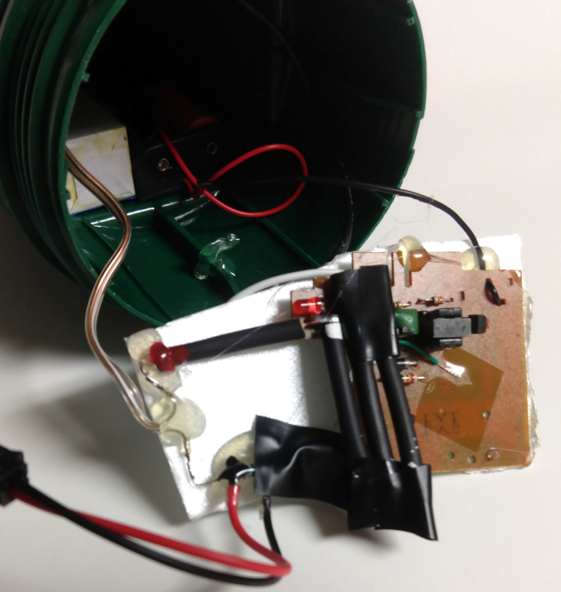
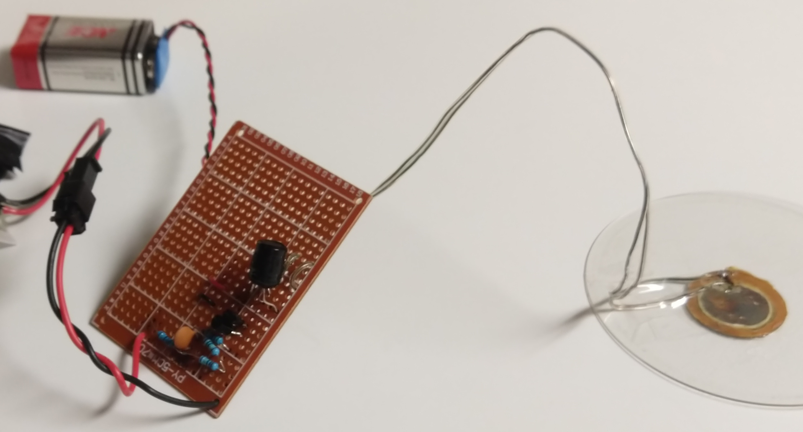

This is an extremely simplified Geiger detector. I built it mostly as an exercise to improve my understanding of electronics and Geiger counters. It produces an audible click when an ionizing particle is detected by the Geiger-Müller tube.
The J304 GM tube is driven by a modified flash from a disposable camera. A string of Zener diodes limits the voltage. A connector leading to the output board is soldered across the GM tube's cathode resistor.
The signal from the GM tube is passed through an RC network before being amplified by a Darlington pair. This amplified signal is fed to a transformer, which drives the piezo element.